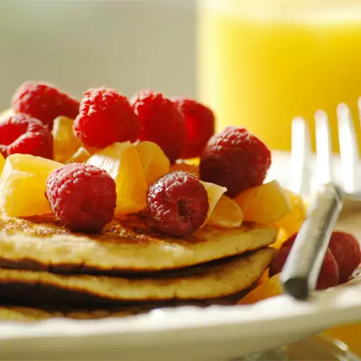

Pancakes

Dad's Double Whole Grain Pancakes
My dad makes these pancakes. They are the BEST!
Perfect Recipe
Ingredients
- 1 cup all-purpose flour
- 1 ⅓ cups dry milk powder
- 1 teaspoon baking powder
- 1 ½ teaspoons baking soda
- 1 teaspoon salt
- 2 cups whole wheat flour
Steps
- In a large bowl, sift all-purpose flour, milk powder, baking powder, baking soda and salt. Stir in whole wheat flour. In a small bowl, combine sugar, eggs, water, butter and vinegar. Make a well in the flour mixture, and pour in the egg mixture. Mix until smooth.
- Heat a lightly oiled griddle or frying pan over medium heat. Pour or scoop the batter onto the griddle, using approximately 1/4 cup for each pancake. Cook until pancakes are golden brown on both sides; serve hot.